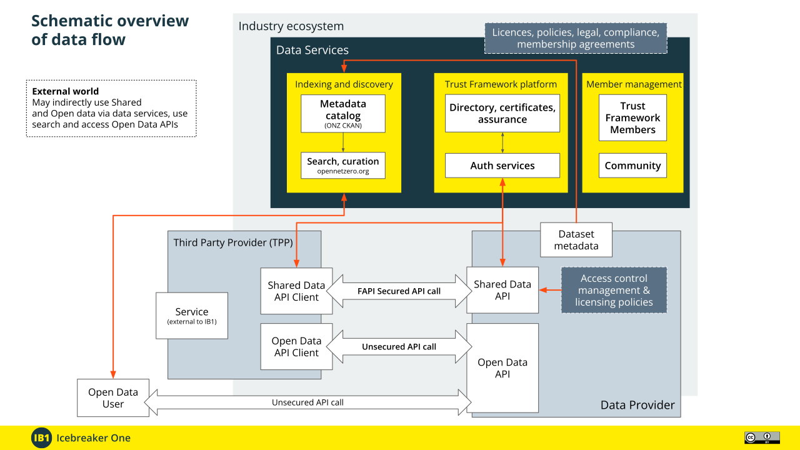

Skip to content
Icebreaker One Technical Documentation
Trust Framework Architecture
Icebreaker One Technical Documentation
Introduction to the IB1 Trust framework
Considerations before you start
Core Policies
Guidance for Data Consumers
Guidance for Data Providers
Common Security Requirements
Trust Framework Architecture
Dataset Metadata
Access Control and Capability Grant Language
Glossary
Additional Material
Icebreaker One Trust Framework Architecture
